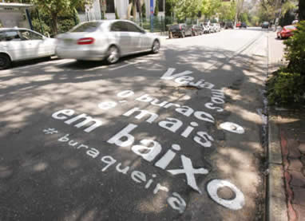
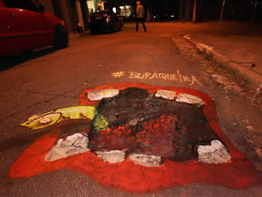
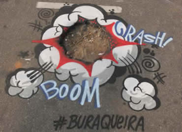
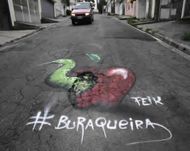
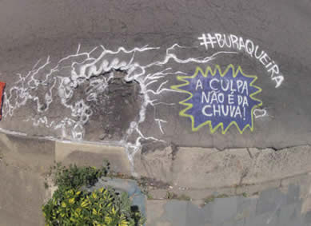
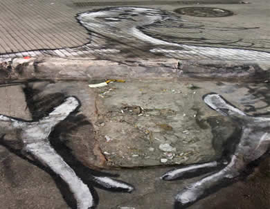
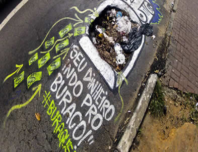
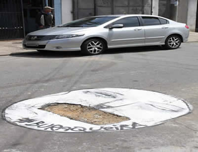

Grafites em buracos de SP chama atenção de poder público
A Veja São Paulo para protestar sobre as ruas esburacadas, fez uma parceria com artistas de rua da cidade, na qual 50 buracos nas cincos regiões da cidade foram grafitados com muita criatividade. A curadoria do projeto é de Bruno Ribeiro e Jacqueline Prado que reuniram onze nomes do grafite paulistano em encontros na galeria A7MA, na Vila Madalena. O objetivo da ação é chamar a atenção do poder público para os problemas do asfalto paulistano, e está funcionando porque 48 dos 50 buracos foram tampados.
Em todos os desenhos foi utilizada a hashtag #buraqueira, que foi multiplicada nas redes sociais.
Veja algumas fotos dos buracos paulistanos que foram customizados:


 

Urban Art | 2013 - 2013